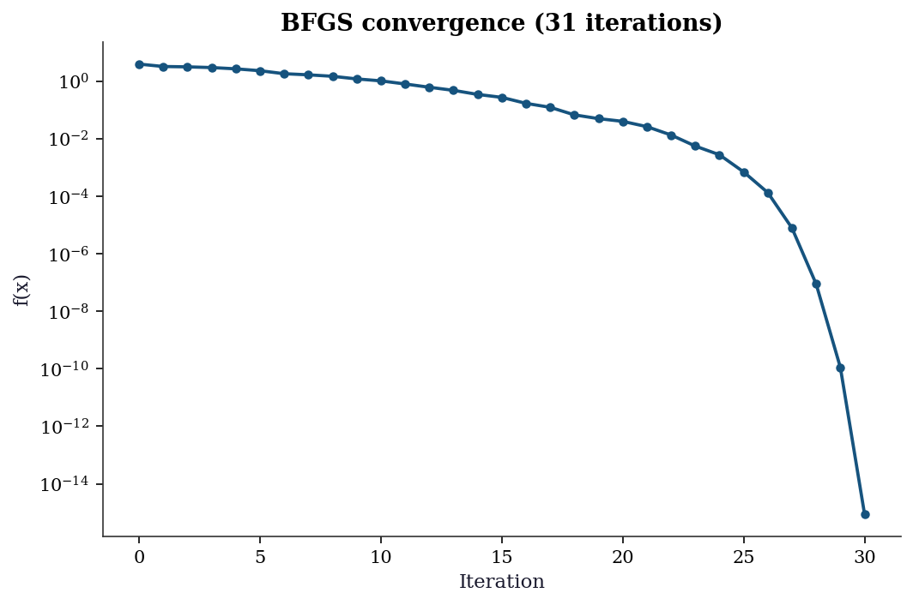
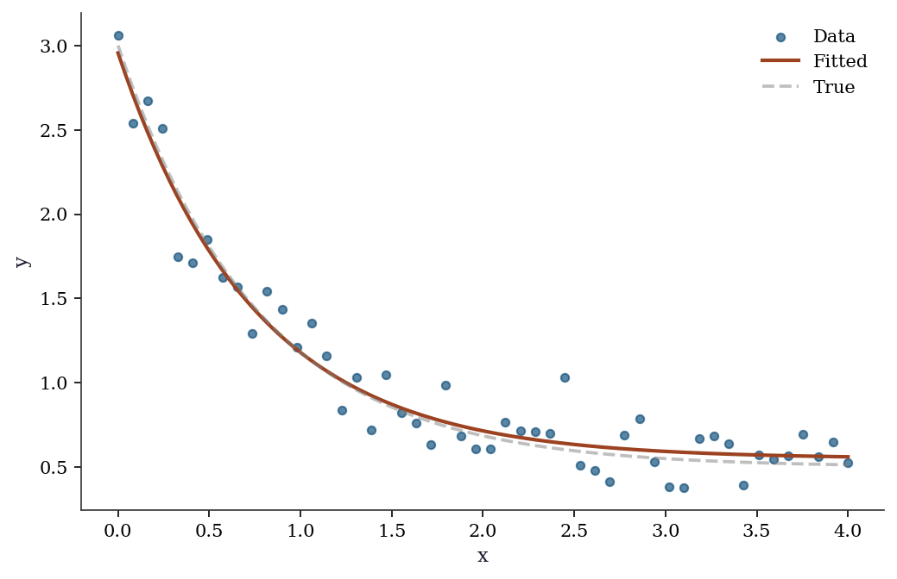
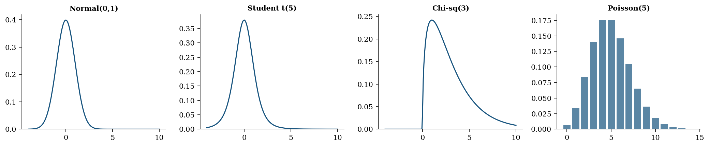

import numpy as np
import matplotlib.pyplot as plt
from scipy import optimize, stats, linalg
from scipy.optimize import minimize, curve_fit
import statsmodels.api as sm
plt.style.use('assets/book.mplstyle')
rng = np.random.default_rng(42)Getting Started with SciPy
What is SciPy?
SciPy is a collection of mathematical algorithms built on top of NumPy. Where NumPy gives you arrays and basic linear algebra, SciPy gives you optimization, statistics, signal processing, interpolation, and more — the tools that turn array arithmetic into scientific computation.
This chapter introduces the SciPy modules you will use throughout the book. By the end, you will be able to:
- Minimize a function with
scipy.optimize.minimize - Fit a model to data with
scipy.optimize.curve_fit - Work with probability distributions via
scipy.stats - Solve linear systems with
scipy.linalg - Fit a regression with
statsmodelsand read the output - Understand how scikit-learn connects to all of the above
We start simple and build up.
SciPy’s Module Structure
SciPy is organized into subpackages. The ones this book uses most:
| Module | Purpose | First used in |
|---|---|---|
scipy.optimize |
Minimization, root finding, curve fitting | This chapter |
scipy.stats |
Distributions, hypothesis tests, QMC | This chapter |
scipy.linalg |
Linear algebra (beyond NumPy) | This chapter |
scipy.special |
Special functions (gamma, beta, etc.) | Ch. 12 |
scipy.sparse |
Sparse matrices | Appendix |
import scipy
print(f"scipy version: {scipy.__version__}")
print(f"Available modules: {[m for m in dir(scipy) if not m.startswith('_')][:10]}...")scipy version: 1.14.1
Available modules: ['LowLevelCallable', 'cluster', 'constants', 'datasets', 'fft', 'fftpack', 'integrate', 'interpolate', 'io', 'linalg']...Each module is imported separately — import scipy does not import the submodules. This is a deliberate design choice: you load only what you need.
Your First Optimization
The most important function in this book is scipy.optimize.minimize. It takes a Python function and finds the input value that makes the function as small as possible.
Let’s start with the simplest case: minimizing a function of one variable.
from scipy.optimize import minimize
# Step 1: Define the function we want to minimize.
# It must take a numpy array as input and return a single number.
def quadratic(x):
"""f(x) = (x - 3)^2 + 1. Minimum at x = 3, f(3) = 1."""
return (x - 3)**2 + 1
# Step 2: Call minimize.
# x0 is the starting point — where the optimizer begins searching.
# minimize does NOT try every possible x; it starts at x0 and takes
# steps in the direction that decreases f.
result = minimize(quadratic, x0=0.0)
# Step 3: Read the result.
# result.x is the solution (a numpy array, even for 1D problems).
# result.fun is the function value at the solution.
print(f"Minimum found at x = {result.x[0]:.6f}")
print(f"Function value: f(x) = {result.fun:.6f}")
print(f"Converged: {result.success}")
print(f"Iterations: {result.nit}")Minimum found at x = 3.000000
Function value: f(x) = 1.000000
Converged: True
Iterations: 2What just happened:
- We defined a Python function
quadraticthat takes an inputxand returns \((x - 3)^2 + 1\). The minimum is at \(x = 3\) where \(f(3) = 1\). - We called
minimize(quadratic, x0=0.0). The optimizer started at \(x = 0\) and took steps toward smaller values of \(f\). - By default,
minimizeuses the BFGS algorithm (Chapter 2), which estimates the gradient numerically and uses it to decide which direction to step. - After a few iterations, the optimizer found \(x \approx 3\) and stopped because the gradient was close to zero.
The result object contains everything the optimizer computed. You will use these attributes constantly:
# The result object — your interface to the optimizer
print(f"result.x: {result.x}") # solution (numpy array)
print(f"result.fun: {result.fun}") # f(x) at the solution
print(f"result.success: {result.success}") # did the optimizer converge?
print(f"result.message: {result.message}") # human-readable status
print(f"result.nit: {result.nit}") # number of iterations taken
print(f"result.nfev: {result.nfev}") # number of times f was evaluatedresult.x: [3.00000003]
result.fun: 1.0000000000000009
result.success: True
result.message: Optimization terminated successfully.
result.nit: 2
result.nfev: 6Always check result.success. If it is False, the optimizer did not converge and result.x may not be a minimum. Common reasons: too few iterations allowed, a bad starting point, or a function that has no minimum (e.g., \(f(x) = -x\)).
Multivariate Optimization
Real problems have multiple parameters. Instead of minimizing over a single number \(x\), we minimize over a vector \(\mathbf{x} = (x_1, x_2, \ldots, x_p)\). The function still returns a single number; the input is now a numpy array.
SciPy includes the Rosenbrock function as a built-in test problem. It is a 2D function with a narrow curved valley — hard for optimizers because the valley curves, so the direction of steepest descent does not point toward the minimum.
from scipy.optimize import rosen, rosen_der
# rosen: the Rosenbrock function f(x) = (1-x1)^2 + 100*(x2 - x1^2)^2
# rosen_der: its gradient (a function that returns a 2D array)
# The minimum is at (1, 1) with f = 0.
# x0 must be a numpy array with the right number of dimensions
x0 = np.array([-1.0, 1.0])
# jac=rosen_der supplies the gradient analytically.
# Without it, minimize would estimate the gradient by evaluating f
# at nearby points (finite differences) --- slower and less accurate.
result = minimize(rosen, x0, jac=rosen_der, method='BFGS')
print(f"Solution: x = {result.x.round(6)}")
print(f"f(solution): {result.fun:.2e}")
print(f"Iterations: {result.nit}")
print(f"Gradient evals: {result.njev}")Solution: x = [1. 1.]
f(solution): 8.91e-16
Iterations: 31
Gradient evals: 40Key parameters of minimize:
| Parameter | What it does | Example |
|---|---|---|
fun |
The function to minimize | rosen |
x0 |
Starting point (array) | np.array([-1, 1]) |
method |
Algorithm to use | 'BFGS', 'L-BFGS-B', 'Nelder-Mead' |
jac |
Gradient function (optional) | rosen_der |
hess |
Hessian function (optional) | rosen_hess |
bounds |
Parameter bounds | [(0, None), (-1, 1)] |
tol |
Convergence tolerance | 1e-8 |
If you don’t supply jac, minimize estimates the gradient using finite differences — slower and less accurate. Supplying the analytical gradient is always better when available.
Let’s visualize what the optimizer does. We can track its progress by recording the function value at each iteration using minimize’s callback parameter:
# Track f(x) at each iteration
f_values = []
def record_progress(xk):
"""Called by minimize at each iteration."""
f_values.append(rosen(xk))
# Run the optimizer with the callback
minimize(rosen, x0, jac=rosen_der, method='BFGS',
callback=record_progress)
# Plot: function value vs iteration number
fig, ax = plt.subplots()
ax.plot(range(len(f_values)), f_values, 'o-', markersize=4)
ax.set_xlabel('Iteration')
ax.set_ylabel('f(x)')
ax.set_yscale('log') # log scale because values span many orders
ax.set_title(f'BFGS convergence ({len(f_values)} iterations)')
plt.show()
The log-scale y-axis reveals the convergence behavior: the function value drops rapidly at first (the optimizer finds the valley) then decreases more slowly (navigating along the narrow valley floor). Chapter 2 explains why BFGS behaves this way.
Choosing an Optimization Method
minimize supports many algorithms. Here is how they compare on the Rosenbrock function:
x0 = np.array([-1.2, 1.0])
# Compare four methods on the same problem
print(f"{'Method':<15} {'Iterations':>10} {'f-evals':>8} {'Success':>8}")
print("-" * 45)
# Nelder-Mead: no gradient needed — just evaluates f
res = minimize(rosen, x0, method='Nelder-Mead')
print(f"{'Nelder-Mead':<15} {res.nit:>10} {res.nfev:>8} {str(res.success):>8}")
# BFGS: uses the gradient to take smarter steps
res = minimize(rosen, x0, method='BFGS', jac=rosen_der)
print(f"{'BFGS':<15} {res.nit:>10} {res.nfev:>8} {str(res.success):>8}")
# L-BFGS-B: like BFGS but uses less memory (for large problems)
res = minimize(rosen, x0, method='L-BFGS-B', jac=rosen_der)
print(f"{'L-BFGS-B':<15} {res.nit:>10} {res.nfev:>8} {str(res.success):>8}")
# Newton-CG: uses gradient + Hessian (second derivatives)
res = minimize(rosen, x0, method='Newton-CG', jac=rosen_der,
hess='2-point') # estimate Hessian via finite differences
print(f"{'Newton-CG':<15} {res.nit:>10} {res.nfev:>8} {str(res.success):>8}")Method Iterations f-evals Success
---------------------------------------------
Nelder-Mead 85 159 True
BFGS 32 39 True
L-BFGS-B 36 44 True
Newton-CG 83 105 TrueNotice that methods using more derivative information (BFGS, Newton-CG) generally need fewer iterations than Nelder-Mead, which uses no derivatives at all. The tradeoff: gradient computation has a cost too.
Rules of thumb:
- No gradient available? Use
Nelder-Mead(simple, no derivatives) - Gradient available, small problem (\(p < 1000\))? Use
BFGS - Gradient available, large problem? Use
L-BFGS-B - Need bounds on parameters? Use
L-BFGS-Bortrust-constr - Have the Hessian too? Use
Newton-CGortrust-ncg
Each of these algorithms is developed in depth in Chapters 2–5.
Fitting Models to Data: curve_fit
The most common use of optimization in science: you have data points \((x_i, y_i)\) and a model \(y = f(x; a, b, c)\) with unknown parameters. You want to find the parameters that make the model fit the data best (in the least-squares sense).
scipy.optimize.curve_fit does this. It wraps minimize internally — you don’t need to set up the objective function yourself.
# Step 1: Generate some noisy data to fit.
# In real life, this would be your experimental measurements.
x_data = np.linspace(0, 4, 50) # 50 evenly-spaced x values
y_true = 2.5 * np.exp(-1.3 * x_data) + 0.5 # true model (unknown to us)
y_data = y_true + 0.2 * rng.standard_normal(50) # add measurement noise
# Step 2: Define the model function.
# The FIRST argument must be x (the independent variable).
# The REMAINING arguments are the parameters to estimate.
def exp_decay(x, a, b, c):
"""Model: y = a * exp(-b * x) + c"""
return a * np.exp(-b * x) + c
# Step 3: Fit the model to data.
# p0 is the initial guess for [a, b, c]. curve_fit needs a reasonable
# starting point — if p0 is too far off, it may converge to a wrong
# local minimum or fail entirely.
popt, pcov = curve_fit(exp_decay, x_data, y_data, p0=[1, 1, 0])
# popt: optimal parameters (numpy array of length 3)
# pcov: covariance matrix of the parameters (3x3 numpy array)
# The diagonal of pcov gives the variance of each parameter estimate.
perr = np.sqrt(np.diag(pcov)) # standard errors = sqrt(variance)
print(f"{'Param':<6} {'True':>8} {'Estimate':>10} {'SE':>8}")
for name, true, est, se in zip(
['a', 'b', 'c'], [2.5, 1.3, 0.5], popt, perr
):
print(f"{name:<6} {true:>8.3f} {est:>10.4f} {se:>8.4f}")Param True Estimate SE
a 2.500 2.4051 0.0924
b 1.300 1.3400 0.1101
c 0.500 0.5501 0.0394fig, ax = plt.subplots()
ax.scatter(x_data, y_data, s=20, alpha=0.7, label='Data')
x_fine = np.linspace(0, 4, 200)
ax.plot(x_fine, exp_decay(x_fine, *popt), color='C1', linewidth=2,
label='Fitted')
ax.plot(x_fine, exp_decay(x_fine, 2.5, 1.3, 0.5),
'--', color='gray', alpha=0.5, label='True')
ax.set_xlabel('x'); ax.set_ylabel('y')
ax.legend()
plt.show()
What curve_fit does under the hood: It calls scipy.optimize.least_squares with the Levenberg–Marquardt algorithm. The pcov matrix comes from the Gauss–Newton approximation to the Hessian. Chapter 6 develops this in detail.
Probability Distributions: scipy.stats
SciPy provides every standard probability distribution through a unified API. Once you learn the interface for one distribution, you know it for all of them.
The pattern: create a frozen distribution object (with fixed parameters), then call methods on it.
from scipy.stats import norm, t, chi2, poisson
# Create a "frozen" normal distribution with mean=0, std=1.
# "Frozen" means the parameters (loc, scale) are fixed.
# loc = mean, scale = standard deviation (not variance!).
normal = norm(loc=0, scale=1)
# Now call methods on this object:
print(f"PDF at x=0: {normal.pdf(0):.4f}") # density f(0)
print(f"CDF at x=1.96: {normal.cdf(1.96):.4f}") # P(X ≤ 1.96)
print(f"Quantile 0.975: {normal.ppf(0.975):.4f}") # x such that P(X ≤ x) = 0.975
print(f"Random samples: {normal.rvs(size=3, random_state=42).round(3)}")
print(f"Mean, Var: {normal.mean():.1f}, {normal.var():.1f}")PDF at x=0: 0.3989
CDF at x=1.96: 0.9750
Quantile 0.975: 1.9600
Random samples: [ 0.497 -0.138 0.648]
Mean, Var: 0.0, 1.0The key insight: norm(loc=0, scale=1) creates an object with the parameters baked in. You can then call .pdf(), .cdf(), .rvs() without re-specifying the parameters each time. This is different from R (where you call dnorm(x, mean=0, sd=1) every time) and makes code cleaner when you reuse a distribution.
The API is identical for every distribution — only the parameters change:
distributions = {
'Normal(0,1)': norm(0, 1),
'Student t(5)': t(df=5),
'Chi-sq(3)': chi2(df=3),
'Poisson(5)': poisson(mu=5),
}
print(f"{'Distribution':<15} {'Mean':>8} {'Var':>8} {'P(X>2)':>10}")
for name, rv in distributions.items():
sf = rv.sf(2) # survival function = 1 - CDF
print(f"{name:<15} {rv.mean():>8.3f} {rv.var():>8.3f} {sf:>10.4f}")Distribution Mean Var P(X>2)
Normal(0,1) 0.000 1.000 0.0228
Student t(5) 0.000 1.667 0.0510
Chi-sq(3) 3.000 6.000 0.5724
Poisson(5) 5.000 5.000 0.8753Key methods (same for all distributions):
| Method | Returns | Example |
|---|---|---|
rv.pdf(x) / rv.pmf(k) |
Density / mass at x | norm(0,1).pdf(0) |
rv.cdf(x) |
\(P(X \leq x)\) | norm(0,1).cdf(1.96) |
rv.ppf(q) |
Quantile (inverse CDF) | norm(0,1).ppf(0.975) |
rv.sf(x) |
Survival: \(1 - \text{CDF}\) | norm(0,1).sf(1.96) |
rv.rvs(size=n) |
Random samples | norm(0,1).rvs(size=100) |
rv.fit(data) |
MLE of parameters | norm.fit(data) |
rv.interval(alpha) |
Equal-tailed interval | norm(0,1).interval(0.95) |
fig, axes = plt.subplots(1, 4, figsize=(14, 3))
x = np.linspace(-4, 10, 200)
for ax, (name, rv) in zip(axes, distributions.items()):
if hasattr(rv, 'pdf'):
ax.plot(x, rv.pdf(x), linewidth=1.5)
else:
k = np.arange(0, 15)
ax.bar(k, rv.pmf(k), alpha=0.7)
ax.set_title(name, fontsize=10)
ax.set_ylim(bottom=0)
plt.tight_layout()
plt.show()
The gamma and beta distributions appear throughout the book. The gamma models waiting times and positive-valued quantities like variances; the beta models proportions and probabilities. Both use the same frozen-object API:
# Gamma: shape a, scale s. Mean = a*s, Var = a*s^2.
gamma_rv = stats.gamma(a=2.0, scale=1.5)
print(f"Gamma(a=2, scale=1.5):")
print(f" Mean = {gamma_rv.mean():.2f}, "
f"Var = {gamma_rv.var():.2f}")
print(f" P(X > 5) = {gamma_rv.sf(5):.4f}")
# Beta: shape parameters a, b. Supported on [0, 1].
beta_rv = stats.beta(a=2, b=5)
print(f"\nBeta(a=2, b=5):")
print(f" Mean = {beta_rv.mean():.3f}, "
f"Var = {beta_rv.var():.4f}")
print(f" P(X < 0.5) = {beta_rv.cdf(0.5):.4f}")Gamma(a=2, scale=1.5):
Mean = 3.00, Var = 4.50
P(X > 5) = 0.1546
Beta(a=2, b=5):
Mean = 0.286, Var = 0.0255
P(X < 0.5) = 0.8906Fitting distributions to data. The .fit() method estimates distribution parameters from data via maximum likelihood. This is the statistical inverse of .rvs(): where .rvs() generates data from known parameters, .fit() recovers parameters from observed data.
# Generate data from a known gamma distribution
gamma_data = stats.gamma.rvs(
a=2.5, scale=1.8, size=500, random_state=rng
)
# Fit: estimate shape and scale from data
a_hat, loc_hat, scale_hat = stats.gamma.fit(
gamma_data, floc=0
)
print(f"True: a=2.50, scale=1.80")
print(f"Estimated: a={a_hat:.2f}, scale={scale_hat:.2f}")
# floc=0 fixes the location parameter at zero.
# Without it, .fit() estimates a 3-parameter model
# (shape, location, scale) when you usually want two.True: a=2.50, scale=1.80
Estimated: a=2.55, scale=1.75Hypothesis testing. scipy.stats also provides hypothesis tests. The most common: the two-sample \(t\)-test, which tests whether two groups have the same mean.
# Two groups with different means
group_a = rng.normal(loc=5.0, scale=1.5, size=50)
group_b = rng.normal(loc=5.8, scale=1.5, size=50)
# Two-sample t-test (assumes equal variance)
stat, pval = stats.ttest_ind(group_a, group_b)
print(f"t-statistic: {stat:.3f}")
print(f"p-value: {pval:.4f}")
# Welch's t-test (does not assume equal variance)
stat_w, pval_w = stats.ttest_ind(
group_a, group_b, equal_var=False
)
print(f"\nWelch's t: {stat_w:.3f}")
print(f"Welch's p: {pval_w:.4f}")t-statistic: -2.721
p-value: 0.0077
Welch's t: -2.721
Welch's p: 0.0077The test returns a statistic and a two-sided \(p\)-value. A small \(p\)-value (below your significance level, typically 0.05) means the data are unlikely under the null hypothesis of equal means. Welch’s variant (equal_var=False) is generally safer — it does not assume the two groups share the same variance. Every test in scipy.stats follows this pattern: call a function, get back a statistic and a \(p\)-value. Chapter 10 develops the theory behind these tests.
Linear Algebra: scipy.linalg
scipy.linalg extends NumPy’s linear algebra with more decompositions and solvers.
from scipy import linalg
# Solve Ax = b
A = np.array([[3, 1], [1, 2]], dtype=float)
b = np.array([9, 8], dtype=float)
x = linalg.solve(A, b)
print(f"Solution: {x}")
print(f"Check: A @ x = {A @ x}")
# Cholesky decomposition (for positive definite matrices)
L = linalg.cholesky(A, lower=True)
print(f"\nCholesky L:\n{L.round(4)}")
print(f"L @ L.T = A? {np.allclose(L @ L.T, A)}")
# SVD
U, s, Vt = linalg.svd(A)
print(f"\nSingular values: {s.round(4)}")
print(f"Condition number: {s[0]/s[1]:.2f}")Solution: [2. 3.]
Check: A @ x = [9. 8.]
Cholesky L:
[[1.7321 0. ]
[0.5774 1.291 ]]
L @ L.T = A? True
Singular values: [3.618 1.382]
Condition number: 2.62When to use scipy.linalg vs numpy.linalg: Both wrap LAPACK, but scipy.linalg is the superset. It includes everything in numpy.linalg plus decompositions that NumPy omits (LU, Schur, QZ, matrix functions like expm and logm). scipy’s versions also expose more LAPACK options — for instance, linalg.solve accepts an assume_a parameter that tells the solver the matrix is symmetric or positive definite, enabling a faster code path:
# Exploit matrix structure for faster solves
A_spd = np.array([[4, 2], [2, 3]], dtype=float)
b_vec = np.array([1, 2], dtype=float)
x_general = linalg.solve(A_spd, b_vec)
x_fast = linalg.solve(A_spd, b_vec, assume_a='pos')
print(f"General solve: {x_general}")
print(f"PD solve: {x_fast}")
print(f"Match: {np.allclose(x_general, x_fast)}")General solve: [-0.125 0.75 ]
PD solve: [-0.125 0.75 ]
Match: TrueChecking positive definiteness. A matrix \(\mathbf{A}\) is positive definite if \(\mathbf{x}^\top \mathbf{A} \mathbf{x} > 0\) for all nonzero \(\mathbf{x}\). This property appears throughout the book: covariance matrices must be positive definite, the Hessian at a minimum is positive definite, and Cholesky decomposition requires it. The simplest check: try Cholesky and see if it succeeds.
def is_positive_definite(M):
"""Check via Cholesky: succeeds iff M is PD."""
try:
linalg.cholesky(M, lower=True)
return True
except linalg.LinAlgError:
return False
print(f"[[4,2],[2,3]] PD? "
f"{is_positive_definite(A_spd)}")
A_sing = np.array([[1, 1], [1, 1]], dtype=float)
print(f"[[1,1],[1,1]] PD? "
f"{is_positive_definite(A_sing)}")
# Eigenvalues confirm: all positive ↔ PD
eigvals = linalg.eigvalsh(A_spd)
print(f"\nEigenvalues of A_spd: {eigvals.round(4)}")
print("All positive → positive definite")[[4,2],[2,3]] PD? True
[[1,1],[1,1]] PD? False
Eigenvalues of A_spd: [1.4384 5.5616]
All positive → positive definiteWhen you compute a covariance matrix from data, numerical issues can make it slightly non-positive-definite. Chapter 2 shows how this breaks BFGS, and Chapter 16 shows how the Kalman filter handles it. This book uses scipy.linalg throughout.
From SciPy to Statsmodels
SciPy gives you optimization and distributions. But when you fit a regression, you usually want more than just the coefficients — you want to know how confident you should be in them. That is what statsmodels provides.
Statsmodels wraps scipy’s optimization and distribution tools into statistical model objects that report standard errors, \(p\)-values, confidence intervals, and diagnostic tests.
# Generate some regression data: y = 2 + 3*x1 - 1.5*x2 + noise
n = 100
x1 = rng.standard_normal(n)
x2 = rng.standard_normal(n)
y = 2 + 3*x1 - 1.5*x2 + rng.standard_normal(n)
# Statsmodels requires you to add a constant (intercept) column
# manually. This is a deliberate design choice — it makes explicit
# what sklearn hides.
X = sm.add_constant(np.column_stack([x1, x2]))
# X is now a (100, 3) array: column 0 is all 1s (intercept),
# columns 1-2 are x1 and x2.
# Fit OLS (Ordinary Least Squares) regression
ols = sm.OLS(y, X).fit()
# The summary table shows everything:
# coef = estimated coefficients
# std err = standard error (uncertainty in the estimate)
# t = coef / std err (Wald test statistic)
# P>|t| = p-value (probability of seeing this t under H0: coef=0)
# [0.025, 0.975] = 95% confidence interval
print(ols.summary().tables[1])==============================================================================
coef std err t P>|t| [0.025 0.975]
------------------------------------------------------------------------------
const 2.0314 0.103 19.664 0.000 1.826 2.236
x1 2.8653 0.098 29.242 0.000 2.671 3.060
x2 -1.5407 0.095 -16.200 0.000 -1.729 -1.352
==============================================================================The summary output deserves a careful read. Each row is one coefficient; the columns tell you everything about that estimate:
- coef: the point estimate \(\hat{\beta}_j\). This is the predicted change in \(y\) for a one-unit increase in \(x_j\), holding all other predictors fixed.
- std err: the standard error of the estimate. Smaller values mean a more precise estimate. Computed from the diagonal of \((\mathbf{X}^\top \mathbf{X})^{-1} \hat{\sigma}^2\).
- t: the Wald statistic, \(t = \hat{\beta}_j / \text{SE}\). Large absolute values provide evidence that the coefficient differs from zero.
- P>|t|: the two-sided \(p\)-value. Below 0.05 means the coefficient is statistically significant at the 5% level — the data provide evidence against \(H_0\colon \beta_j = 0\).
- [0.025 0.975]: the 95% confidence interval. If this interval excludes zero, the coefficient is significant (consistent with the \(p\)-value column).
The first row (const) is the intercept. Our true intercept was 2, and the estimate should be close. The remaining rows correspond to \(x_1\) (true coefficient 3) and \(x_2\) (true coefficient \(-1.5\)).
What statsmodels adds over plain scipy:
- Standard errors for every coefficient (how precise is the estimate?)
- \(p\)-values (is the coefficient statistically significant?)
- Confidence intervals (what range of values is plausible?)
- \(R^2\) (how much variance does the model explain?)
- AIC, BIC (for comparing models — Chapter 10)
- Diagnostic tests (is the model correctly specified? — Chapter 11)
Under the hood, statsmodels uses scipy.linalg for the matrix solve and scipy.stats for the \(t\)-distribution \(p\)-values. This book teaches you both layers: what statsmodels computes, and how scipy does the computation.
From SciPy to scikit-learn
Scikit-learn is a prediction library built on top of scipy and numpy. Its API is designed around two operations: .fit() (learn from data) and .predict() (make predictions on new data).
The key concept in sklearn is the pipeline: a sequence of preprocessing steps followed by a model. This ensures that preprocessing (e.g., centering and scaling) is applied consistently to both training and test data.
from sklearn.linear_model import Ridge, LogisticRegression
from sklearn.model_selection import cross_val_score
from sklearn.datasets import fetch_california_housing
from sklearn.pipeline import Pipeline
from sklearn.preprocessing import StandardScaler
# Load a built-in dataset: California housing prices
housing = fetch_california_housing(as_frame=True)
X_housing = housing.data # features (pandas DataFrame)
y_housing = housing.target # target: median house value
print(f"Dataset: {X_housing.shape[0]} observations, "
f"{X_housing.shape[1]} features")
print(f"Features: {list(X_housing.columns)}")
# Build a pipeline:
# Step 1: StandardScaler centers each feature (mean=0, std=1)
# Step 2: Ridge regression fits the model with L2 regularization
pipe = Pipeline([
('scaler', StandardScaler()), # subtract mean, divide by std
('ridge', Ridge(alpha=1.0)), # alpha controls regularization strength
])
# Cross-validate: split data into 5 folds, fit on 4, score on 1, repeat
# scoring='neg_mean_squared_error' because sklearn maximizes scores
# (so it negates the error — a convention, not statistics)
scores = cross_val_score(pipe, X_housing, y_housing, cv=5,
scoring='neg_mean_squared_error')
print(f"\nCV MSE: {-scores.mean():.4f} (+/- {scores.std():.4f})")
print(f"(5-fold cross-validation, negated because sklearn maximizes)")Dataset: 20640 observations, 8 features
Features: ['MedInc', 'HouseAge', 'AveRooms', 'AveBedrms', 'Population', 'AveOccup', 'Latitude', 'Longitude']
CV MSE: 0.5583 (+/- 0.0656)
(5-fold cross-validation, negated because sklearn maximizes)The key difference:
- scikit-learn tells you \(\hat{y}\) (predictions) but not whether you should trust the model
- statsmodels tells you whether \(\hat{\beta}\) is significant, what the standard errors are, and whether the model assumptions hold
- scipy is the engine underneath both
# Same regression, two perspectives
from sklearn.linear_model import LinearRegression
# sklearn: prediction-focused
lr = LinearRegression().fit(np.column_stack([x1, x2]), y)
print(f"sklearn coefficients: {lr.coef_.round(3)}")
print(f"sklearn gives: coef_, intercept_, predict()")
print(f"sklearn does NOT give: standard errors, p-values, conf. intervals")
# statsmodels: inference-focused
print(f"\nstatsmodels gives everything sklearn gives, plus:")
print(f" SE: {ols.bse[1:].round(3)}")
print(f" p-values: {ols.pvalues[1:].round(4)}")
print(f" R²: {ols.rsquared:.4f}")sklearn coefficients: [ 2.865 -1.541]
sklearn gives: coef_, intercept_, predict()
sklearn does NOT give: standard errors, p-values, conf. intervals
statsmodels gives everything sklearn gives, plus:
SE: [0.098 0.095]
p-values: [0. 0.]
R²: 0.9285What .fit() Actually Calls
Let’s trace what happens when sklearn’s LogisticRegression.fit() runs:
# sklearn's LogisticRegression uses scipy.optimize.minimize internally
from sklearn.datasets import load_iris
# Binary problem: versicolor vs. virginica
iris = load_iris()
mask = iris.target != 0
X_iris = iris.data[mask, :2]
y_iris = (iris.target[mask] == 1).astype(float)
# sklearn fit
lr_sk = LogisticRegression(solver='lbfgs', C=1e15, max_iter=5000,
tol=1e-12)
lr_sk.fit(X_iris, y_iris)
print(f"sklearn: coef = {lr_sk.coef_.ravel().round(4)}")
# Same thing directly with scipy
def neg_ll_and_grad(params, X, y):
beta, b = params[:-1], params[-1]
z = X @ beta + b
sigma = 1.0 / (1.0 + np.exp(-np.clip(z, -500, 500)))
nll = np.sum(np.logaddexp(0, z) - y * z)
grad = np.append(X.T @ (sigma - y), (sigma - y).sum())
return nll, grad
result = minimize(neg_ll_and_grad, np.zeros(3), args=(X_iris, y_iris),
method='L-BFGS-B', jac=True,
options={'maxiter': 5000, 'gtol': 1e-12})
print(f"scipy: coef = {result.x[:-1].round(4)}")
print(f"Match: {np.allclose(lr_sk.coef_.ravel(), result.x[:-1], atol=1e-3)}")sklearn: coef = [-1.9024 -0.4047]
scipy: coef = [-1.9024 -0.4047]
Match: TrueThe coefficients match because sklearn is calling scipy.
The connection in detail. When you call LogisticRegression(solver='lbfgs').fit(X, y), sklearn:
- Constructs the negative log-likelihood and its gradient from your data.
- Passes both to
scipy.optimize.minimizewithmethod='L-BFGS-B'— a limited-memory version of BFGS that stores only a few vectors instead of the full Hessian approximation (Chapter 4). - Receives the
OptimizeResultand extractsresult.xas the fitted coefficients.
The C parameter controls regularization: it adds a penalty \(\frac{1}{2C}\|\boldsymbol{\beta}\|^2\) to the objective. Setting C=1e15 (as above) effectively removes the penalty, making sklearn’s result match plain maximum likelihood.
This pattern — a high-level library calling scipy.optimize internally — repeats throughout scientific Python. Statsmodels does the same for its MLE-based models (GLMs, ARIMA, mixed effects). When convergence fails in any of these libraries, the fix usually lives at the scipy level: better starting values, a different optimizer, or tighter tolerances. The algorithm is L-BFGS-B — a limited-memory quasi-Newton method developed in Chapter 4.
The Roadmap
Now that you have seen the key scipy tools, here is where the book goes from here. Each chapter takes one method, develops the mathematics, re-implements the algorithm from scratch, and shows the diagnostics that the documentation never mentions.
Part II — Optimization builds the engine under .fit():
- Ch. 2 derives BFGS and trust-region methods — the algorithms behind
minimize(method='BFGS'). - Ch. 3 adds constraints via KKT conditions, SQP, and interior-point methods (
method='SLSQP','trust-constr'). - Ch. 4 scales up with proximal methods, ADMM, and coordinate descent for composite objectives like the Lasso.
- Ch. 5 tackles global and derivative-free optimization:
differential_evolution, simulated annealing, and why Nelder–Mead has no convergence guarantee. - Ch. 6 develops nonlinear least squares — Gauss–Newton and Levenberg–Marquardt, the algorithms inside
curve_fit.
Part III — Monte Carlo turns randomness into inference:
- Ch. 7 covers Monte Carlo integration, importance sampling, and variance reduction via
scipy.stats.qmc. - Ch. 8 develops MCMC from scratch: Metropolis–Hastings, Gibbs sampling, and Hamiltonian Monte Carlo diagnostics.
- Ch. 9 builds bootstrap confidence intervals and permutation tests using
scipy.stats.bootstrap, including failure modes.
Part IV — Likelihood Inference is the statistical core:
- Ch. 10 derives the Wald, score, and likelihood-ratio tests — the inferential trinity reused in every later chapter.
- Ch. 11 dissects linear regression under misspecification: sandwich variance, robust standard errors, and diagnostics.
- Ch. 12 unifies GLMs, robust regression, and quantile regression under the M-estimation framework.
- Ch. 13 covers discrete-choice models: logit, probit, multinomial, and count data with zero inflation.
- Ch. 14 handles clustered data via mixed-effects models and GEE, comparing conditional and marginal approaches.
Part V — Time Series models temporal dependence:
- Ch. 15 develops ARIMA and Box–Jenkins methodology, with the full Dickey–Fuller unit-root asymptotic theory.
- Ch. 16 derives Kalman filter recursions for state-space models and adds Markov regime switching.
- Ch. 17 extends to VAR systems, cointegration, and the Johansen procedure for multivariate time series.
Part VI — Specialized Models addresses specific structures:
- Ch. 18 builds survival analysis: Kaplan–Meier, Cox partial likelihood, and censoring diagnostics.
- Ch. 19 covers PCA, factor analysis, kernel density estimation, and local polynomial regression.
- Ch. 20 develops instrumental variables, GMM, and the weak- instrument pathologies that break standard inference.
Part VII — Causal Inference closes the book:
- Ch. 21 formalizes the potential-outcomes framework with IPW, AIPW, and the double-robustness theorem.
- Ch. 22 covers quasi-experimental designs: regression discontinuity, difference-in-differences, synthetic control.
- Ch. 23 introduces heterogeneous treatment effects and double machine learning via Neyman orthogonality.
Exercises
Exercise 1.1 (\(\star\), getting started). Use scipy.optimize.minimize to find the minimum of \(f(x_1, x_2) = x_1^2 + 2x_2^2 - x_1 x_2\) starting from \((5, 5)\). Print the solution, the function value, and the number of iterations. Try both method='BFGS' and method='Nelder-Mead' — which uses fewer function evaluations?
%%
def f(x):
return x[0]**2 + 2*x[1]**2 - x[0]*x[1]
for method in ['BFGS', 'Nelder-Mead']:
res = minimize(f, [5, 5], method=method)
print(f"{method:>12}: x={res.x.round(6)}, f={res.fun:.2e}, "
f"nfev={res.nfev}")
print("\nBFGS uses the gradient to take informed steps.")
print("Nelder-Mead uses no gradient — more function evaluations.") BFGS: x=[-1.e-06 1.e-06], f=4.79e-12, nfev=24
Nelder-Mead: x=[-4.2e-05 2.5e-05], f=4.07e-09, nfev=93
BFGS uses the gradient to take informed steps.
Nelder-Mead uses no gradient — more function evaluations.%%
Exercise 1.2 (\(\star\star\), curve fitting). Fit a Gaussian \(f(x) = a \exp(-(x-b)^2/(2c^2))\) to noisy data. Generate 100 points from a true Gaussian with \(a=3, b=2, c=0.8\) plus noise \(\sigma=0.3\). Use curve_fit with initial guess \(p_0 = [1, 0, 1]\). Report the fitted parameters and their standard errors.
%%
def gaussian(x, a, b, c):
return a * np.exp(-(x - b)**2 / (2 * c**2))
x_ex = np.linspace(-2, 6, 100)
y_ex = gaussian(x_ex, 3, 2, 0.8) + 0.3*rng.standard_normal(100)
popt, pcov = curve_fit(gaussian, x_ex, y_ex, p0=[1, 0, 1])
perr = np.sqrt(np.diag(pcov))
print(f"{'Param':<6} {'True':>8} {'Est':>10} {'SE':>8}")
for name, true, est, se in zip(['a','b','c'], [3,2,0.8], popt, perr):
print(f"{name:<6} {true:>8.3f} {est:>10.4f} {se:>8.4f}")Param True Est SE
a 3.000 2.9109 0.0959
b 2.000 1.9901 0.0306
c 0.800 0.8054 0.0306%%
Exercise 1.3 (\(\star\star\), diagnostic failure). Use scipy.stats.norm.fit() to estimate the mean and standard deviation of a sample from a Cauchy distribution (stats.cauchy.rvs(size=100)). Compare with the true Cauchy parameters. Why does the normal fit give misleading results? (Hint: the Cauchy has no mean or variance.)
%%
cauchy_data = stats.cauchy.rvs(size=100, random_state=42)
mu_hat, sigma_hat = stats.norm.fit(cauchy_data)
print(f"Normal fit: mu={mu_hat:.2f}, sigma={sigma_hat:.2f}")
print(f"Sample mean: {cauchy_data.mean():.2f}")
print(f"Sample std: {cauchy_data.std():.2f}")
# The Cauchy has no mean or variance — they don't exist.
# norm.fit uses MLE, which tries to match mean and variance
# to a distribution that has neither. The estimates are
# unstable across samples and meaningless.
print("\nThe Cauchy distribution has no mean or variance.")
print("Fitting a normal to Cauchy data is a model misspecification")
print("error — the MLE converges to wrong values.")Normal fit: mu=-0.67, sigma=7.17
Sample mean: -0.67
Sample std: 7.17
The Cauchy distribution has no mean or variance.
Fitting a normal to Cauchy data is a model misspecification
error — the MLE converges to wrong values.%%
Exercise 1.4 (\(\star\star\), comparison). Fit the same linear regression using (a) numpy.linalg.lstsq, (b) scipy.linalg.solve with the normal equations, (c) statsmodels.OLS, and (d) sklearn.LinearRegression. Verify that all four give the same coefficients. Which one gives you standard errors?
%%
# (a) numpy lstsq
beta_np, _, _, _ = np.linalg.lstsq(X, y, rcond=None)
# (b) scipy normal equations: beta = (X'X)^-1 X'y
beta_sp = linalg.solve(X.T @ X, X.T @ y)
# (c) statsmodels
beta_sm = ols.params
# (d) sklearn
beta_sk = np.concatenate([[lr.intercept_], lr.coef_])
print(f"{'Method':<20} {'Intercept':>10} {'beta1':>10} {'beta2':>10}")
for name, b in [('numpy lstsq', beta_np), ('scipy solve', beta_sp),
('statsmodels', beta_sm), ('sklearn', beta_sk)]:
print(f"{name:<20} {b[0]:>10.4f} {b[1]:>10.4f} {b[2]:>10.4f}")
print(f"\nAll four give the same coefficients.")
print(f"Only statsmodels gives standard errors: {ols.bse.round(4)}")Method Intercept beta1 beta2
numpy lstsq 2.0314 2.8653 -1.5407
scipy solve 2.0314 2.8653 -1.5407
statsmodels 2.0314 2.8653 -1.5407
sklearn 2.0314 2.8653 -1.5407
All four give the same coefficients.
Only statsmodels gives standard errors: [0.1033 0.098 0.0951]%%
Bibliographic Notes
SciPy: Virtanen et al. (2020), SciPy 1.0: Fundamental Algorithms for Scientific Computing in Python, Nature Methods. The definitive reference for the library’s scope and design.
Statsmodels: Seabold and Perktold (2010). The OLS implementation uses QR decomposition via scipy.linalg.
Scikit-learn: Pedregosa et al. (2011). The LogisticRegression implementation with solver='lbfgs' calls scipy.optimize.minimize with method='L-BFGS-B' — as demonstrated in the .fit() trace above.
For NumPy foundations: Harris et al. (2020), Array programming with NumPy, Nature.